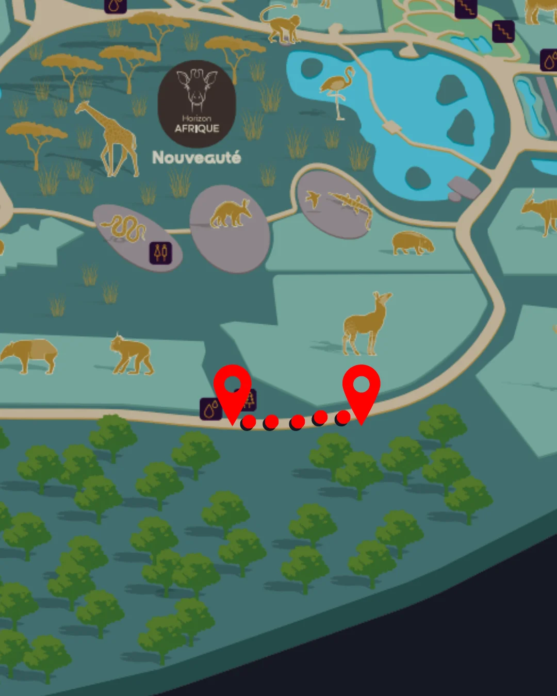

Répondez correctement à la question suivante pour gagner un indice supplémentaire.
Dans une meute de loups du Canada, qui décide du moment de la chasse ?
Félicitations ! Voici votre indice : Un intrus s'est introduit dans le Parc Zoologique & Botanique cette nuit et peut semer la zizanie dans votre enquête.
Mauvaise réponse. Ne vous inquiétez pas, d'autres questions surprises vous seront proposées plus tard.
Sandra, Vétérinaire au Parc Zoologique et Botanique de Mulhouse
Tableau des empreintes

Rendez-vous sur place, puis scannez le QR code de la borne avec ce bouton.
Raccourci de testTableau des empreintes
Rendez-vous sur place, puis scannez le QR code de la borne avec ce bouton.
Raccourci de testSur l'affichette, à côté du QR code, se trouve un nombre à quatre chiffres. Saisissez-le.
Dites-nous ce qui ne va pas, l'équipe est prévenue tout de suite.
Indiquez un numéro de téléphone : c'est par là que nous allons vous débloquer.